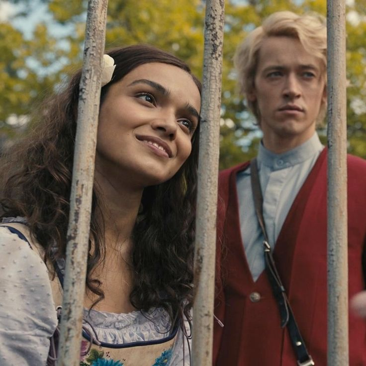

Coriolanus was given the unluckiest tribute to mentor during the 10th Hunger Games. A small, weak girl from District 12.
But, Coriolanus turned that hardship into triumph. For his tribute, Lucy Gray Baird would soon become the victor of the 10th Annual Hunger Games!
Coriolanus and his songbird, Lucy Gray, beat out the 15 remaining tributes...after the rebel bombings in the arena.
Let's see Coriolanus's accomplishment!
Girl (Teslee) - Urban Canville
Girl (Coral) - Festus Creed
Girl (Lamina) - Pliny Harrington
Girl (Wovey) - Hilarius Heavensbee
Girl (Dill) - Felix Ravinstill
Girl (LUCY GRAY!) - Coriolanus Snow!
Our Coriolanus used his brilliance to turn the hopeless songbird into a victor!
